KINESIS
すべてのスポーツに必要な体幹（コア）のトレーニングのため、ケーブルシステムで各種のトレーニングのできるKINESISが装備されています。
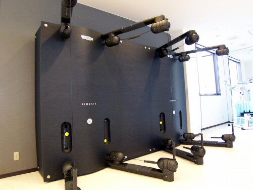
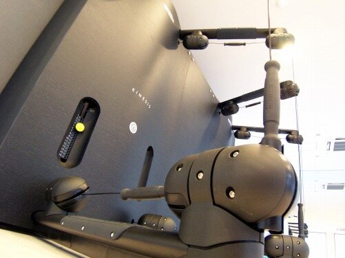
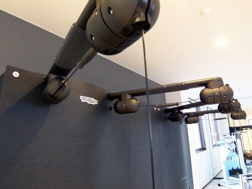
TECHNOGYM
“患者さん”だけでなく、KOSMIでは会員制のフィットネスとして利用できます。
ラグビー、柔道、バスケットなど相手とコンタクトのある競技の選手には、体を大きくする必要があるため、コンピュータ管理されたテクノジムのマシンを使ったストレングストレーニングを中心にメニューを組みます。
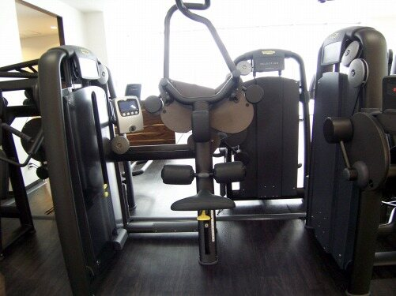
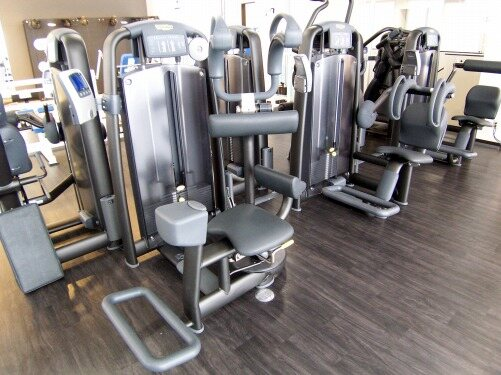
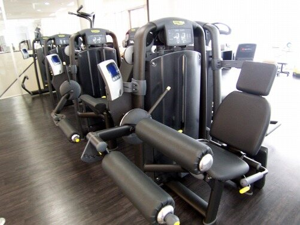
Hogrel
野球や陸上競技、水泳、ゴルフなどの相手とのコンタクトのない競技選手に対しては、ホグレルのマシンを使ったダイナミックストレッチにより、柔軟性のある筋肉を作り上げるメニューを中心に組み立てます。
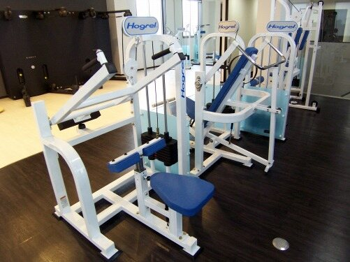
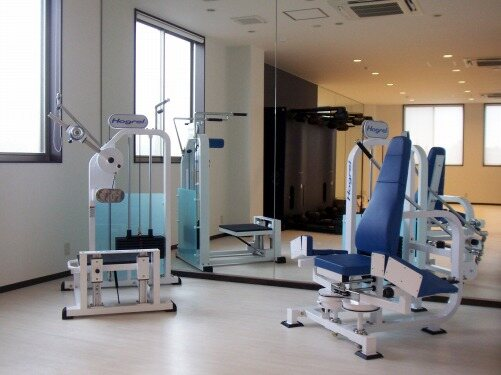
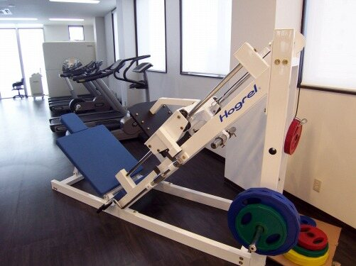
有酸素系トレーニング
有酸素トレーニングのためのランニングマシーン、バイクを用意しております。
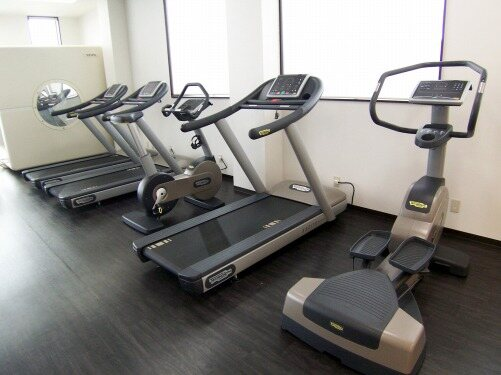
酸素キャビン
酸素キャビンは一般的な酸素カプセルとは違い、中が広い造りになっています。
- 骨折などの怪我の回復を早める
- 疲労回復効果
- 脂肪分解酵素の活性化
- コラーゲンの代謝など新陳代謝を高める
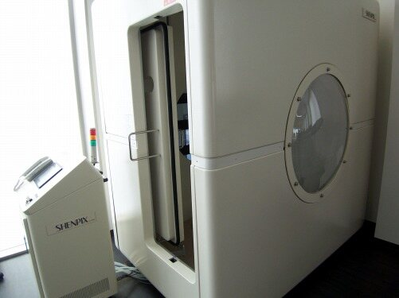